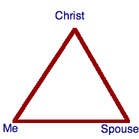

I jokingly said at work today, that I would start a blog about growing my beard out until the end of the year. Well, it’ll be really easy, and funny, so I’ll do it.
I started growing on November 1. While shaving on October 31, 2008, I decided I didn’t want to shave for the rest of the year. And here are the pictures to show the progress.
Elder Russel M. Nelson, of the Quorum of the Twelve Apostles, spoke to many East Coast Stakes via satellite at the beginning of this year (February 2008). He spoke on the eight “ates” that men of the world can work on to help out in families and support our wives. The eight “ates” are 1) anticipate, 2) appreciate, 3) celebrate, 4) cooperate 5) elevate 6) motivate 7) radiate 8 ) supplicate. I unfortunately did not take notes because of antsy children I was trying to keep quiet. So later, I tried to find scriptures and jotted down my thoughts about how I can incorporate these eight “ates” into my life.
1) anticipate: I’m supposed to look and think ahead, to do what my wife will need help with before she asks. D&C 58: 26-27 We must anxiously be engaged in doing good for our spouse. We must want to do helpful things of our own free will.
2) appreciate: I need to appreciate the things my wife does, and tell her of my appreciation. Some of the things I appreciate are (in no way in order of importance):
she keeps the house clean
is striving to improve herself and our family
has strong morals and is unbending in her desire to do what is right
has a strong testimony of God, Jesus, the restored church, etc.
she’s intelligent and teaches our children to be smart, too
* I should have a goal to tell her one thing I appreciate about her every day.
3) celebrate: I need to help us celebrate more often, or at least more better. Annual dates of importance should be celebrated. I need to take time and make an effort to celebrate these times properly. Weekly dates are a way to celebrate each other and our marriage.
* I will do better in planning and making those evenings special.
4) cooperate: I need to cooperate with my wife. We are in this thing called life as a team now. In order for either of us to succeed at anything, we need to work together. As is taught by Jesus in the great intercessory prayer (John 17: 21), we must be one and can be one. Just as God and Jesus are one, we can be one with them. My wife and I need to become one with each other. Mosiah describes how members of God’s Church should be united in harmony. Spouses should be even more so. Having, as Mosiah describes, “their hearts knit together in unity” (Mosiah 18: 21). More importantly, on an eternal timeline, is that we are united with Christ. Fortunately, both processes are coexistent, and indeed, are interdependent.
As we come closer to Christ, we come closer to our spouse.
D&C 38: 27 states that if we are not one, we are not God’s. The way to become a disciple of Christ is through being united with our spouse. The best way to become united with our spouse is to become a disciple of Christ. They build upon one another. Moses’ description of Zion provides one last example, here. They were called Zion, the people of God, because the were of one heart and one mind and dwelt in righteousness (Moses 1: 39). Spouses should put their hearts and minds in sync with one another. It’s like this triangle. If we want to become closer as a couple, then focus on our distance with Christ. As we move along the line towards Christ, then we also move closer together. Once we are one with Christ, we are one with each other.
This translates, in practice, to compromises where there is not immediate agreement, to support of the others decisions, to lots of communication about plans, desires and thoughts, to providing feedback and feelings, to positive and wholesome interaction.
5) elevate: This has a lot to do with giving good intentions to your spouse. Do only those things that lift, inspire and elevate.
6) motivate: Motivate each other to do good. 2 Nephi 2: 16 says we can’t act for ourselves unless we are enticed one way or the other. I should entice my wife to do good. Mosiah 7: 13 says that everything that invites and entices to do good is of God. Are my motivations of God? Are they good?
7) radiate: What radiates? Light radiates. D&C 50: 24 – I must help her be filled with light which is God and receive more light that grows brighter.
8 ) supplicate: It means to beg or apply for something earnestly or humbly. How do I supplicate my wife? Perhaps, not to her, but for her, on her behalf. I supplicate to God for the welfare of my wife. Supplicate, in the scriptures, means much the same, or is used the same as, earnest prayer. Some supplicate scriptures: Enos 1: 4; Alma 7: 3; 3 Nephi 4: 10; Moroni 6: 9; D&C 136: 29.
Enos shows how to supplicate in prayer. It is to be earnest, take the time, make the effort to show God that you really want to talk to Him. When you are humble and sincere, you will pray for the correct things.
This is the last in a series of scriptures that discuss how to get evil out of heart, mind and soul, and thereby out of our actions, which is a process for perfection.
Romans 7 – Paul talks about a persons desire to do evil even though he knows the spiritual law from God requires to be good. Verses 15-21 talk about Paul wanting to do good, but finding that he continually does evil. There is a battle within himself. He knows what he should do, but ends up not doing it. He is on par with Nephi, it seems in verse 24. (see the Joseph Smith Translation of Romans 7: 5-27 for a more correct and understandable version. Here Paul is contending the law of Christ against the law of Moses, it seems, and the law of Christ is what should be followed, but habitually he follows the law of Moses. This he laments, knowing that he should be following the higher law of Christ.)
Romans 8 – This chapter is Paul’s words about the natrual versus the spiritual man, the contention within ourselves to denegrate and become as beasts following natural desires and appetites, or to elevate and desire only the welfare of others and become more like Christ.
Romans 8: 5 – If you are focused on worldly, natural, carnal things, then that is what you are. If you want to be more spiritual, then focus on those things.
Romans 8: 6 – Paul and Nephi were on the same wavelength (well, literally, they received their knowledge from the same source, see 2 Nephi 9: 38).
Romans 8: 11 – The power used for the Resurrection has power to chane our mortal bodies. Our physical bodies can be changed, as well as our desires and hearts.
Romans 8: 13-14 – Following the desires of the flesh, the carnal, sensual, bodily appetites, leads to spiritual death. Following the Spirit leads to spiritual life.
Some Closing Thoughts:
Some closing thoughts on how to have no disposition to do eil and have virtue garnish your thoughts.
Firstly, rely on the Savior. Have an AHA! moment. Apply His Atonement. Desire and plead for His grace (which is the enabling power).
Something good must replace the bad. Memorize scriptures, sing hymns, think about missionary work, say a prayer, etc.
Remember the consequences of evil actions
Have a sincere desire in your heart to overcome. Do this by: trusting in the Lord and acknowledging His part in your life; pay tithing; take the counsel of God.
Proverbs 3: 1-13 – Indirectly, these scriptures show how to replace the evil with good. The idea is that you can’t just get rid of evil. That just leaves a void. Instead you must replace it with good. So, looking at these verses will show you how to replace evil (in heart, mind and action) with good.
Let’s look at these verses more closely:
Proverbs 3: 1 “My son, forget not my law; but let thine heart keep my commandments:”
First you need to remember the law! You can’t keep it if you don’t remember it. Next, it’s one thing for your brain to know, it’s another for your heart to know. It’s kind of like people who smoke. They know that it’s harmful and is literally killing them, but they are so addicted to the nicotene that thir personal desires and self-control are rendered almost useless. The heart, or spirit of a person, must be given power, and the desire to do righteousness.
Proverbs 3: 3 “Let not mercy and atruth forsake thee: bbind them about thy neck; write them upon the ctable of thine dheart:”
This invokes similar thoughts. Once you have the law in your heart, do the same with truth and righteous motives. Let them be close to you, and part of you. “Write it on the table of your heart.” How to do that, of course, is the purpose of this study!
These verses give the ideas on how to bind about your neck and write in your heart the truth and the law. Trust in the Lord, don’t just believe in Him, but believe Him (see “Believing Christ” by Stephen E. Robinson). Always acknowledge God’s part in your life; your blessings, your existence, your stature, your possessions, etc. When you acknowledge Him, He will lead you.
Proverbs 3: 7-8 “Be not awise in thine own eyes: bfear the Lord, and depart from evil. It shall be ahealth to thy navel, and marrow to thy bones.”
More of the same. Trust in God, in His wisdom, not your own.
Proverbs 3: 9-10 “aHonour the Lord with thy bsubstance, and with the cfirstfruits of all thine increase: So shall thy barns be filled with aplenty, and thy presses shall burst out with new wine.”
Proverbs 3: 11-13 “My son, despise not the achastening of the Lord; neither be weary of his correction: For whom the Lord loveth he acorrecteth; even as a bfather the son in whom he delighteth. aHappyis the man that findeth bwisdom, and the man that getteth cunderstanding.”
Take the counsel of God. Don’t be upset when he corrects and reproves. It is a sign of His love for you when he corrects.
More scriptures to help me get rid of evil tendencies.
Alma 37: 29 – Alma teaches Helaman to keep the secret plans and oaths of the devil from the people, but teach the people their wickedness so that they will abhor such wickedness. Helaman is instructed to help the people remember the wickedness they and others have done, so that they will not want to do it themselves. So we should not focus on, or try to learn how wicked things are done, but instead focus on the consequences of wicked actions. With a knowledge of the true consequences of participating in an action, it is more likely that a wise choice will be made.
2 Nephi 4: 31 – Nephi, the righteous prophet, seer of all that God has to show, asks that his soul be redeemed, that he be caused to shake at the appearance of sin.
2 Nephi 9: 49 – Nephi’s soul abhors sin by praising Gd and delighting in righteousness. How do we delight in righteousness? It is what we focus on, what we are entertained by, etc.
Alma 37: 32-33 – Helaman is to teach the people to hate sin and iniquity, but not to hate the people who do it. To teach them to hate sin, Helaman is to focus on teaching the people about repentance, faith in Jesus Christ, humility, meekness, and to face temptations with faith in Jesus Christ.
3 Nephi 20:26 – Christ is sent by Heavenly Father to bless us in our turning away from iniquities.
Here are a few scriptures pertaining to the desire to have no more disposition to do evil.
Mosiah 5: 2 – “no more disposition to do evil, but to do good…” You can’t just get rid of something, but it must be replaced. So, to get rid of bad thoughts, they must be replaced with good. To get rid of evil actions and intents, they must be replaced with righteous ones. Bad habits can not just be stopped, but must be replaced with good habits. The people that King Benjamin spoke to first heard the Gospel, then they believed it. The Spirit bore testimony and changed them, or the Spirit was a catalyst in their changing.
Alma 19: 33 – Ammon teaches Lamoni and his people. They experience an overpowering of the Spirit, through which their hearts are changed and they desire evil no more. So studying the Gospel, listening to the prophets, and letting the Spirit work in us helps us to have a change of heart.
Alma 13:12 – Alma speaks to the people in Ammoniahah after the episode with Zeezrom. He explains about those who have the higher priesthood. They were first sanctified by the Spirit, then they saw sin with abhorance.
Alma 5: 14 – Alma preaches in Zarahemla. He preaches about having God’s countenance in ours and asks if we have had that mighty change.
Alma 5: 12 – Alma shows that a change of heart comes through faith.
So far we see that the Holy Spirit has a great part in our having no more disposition to do evil. We hear and study the word of God and the Spirit works in us a mighty change.
Back in May of this year I started to search through the scriptures about what it means and how to obtain a state where I no longer have a disposition to do evil. One definition of “disposition” is “an inclination or tendency.” Much too often my disposition is to give in to temptations. I’m no where near the level of Nephi, and I all too often must cry out “O wretched man that I am! Yea, my heart sorroweth because of my flesh; my soul grieveth because of mine iniquities. I am encompassed about, because of the temptations and the sins which do so easily beset me. And when I desire to rejoice, my heart groaneth because of my sins…” [2 Nephi 4: 17-19].
King Benjamin preaches about the Gospel of Jesus Christ to his people.
I was reading in Mosiah and came across the people who have been taught by King Benjamin. After hearing the Gospel of Jesus Christ in such plainness they desire to be baptised, and covenant to follow Jesus. They exclaim great joy at their “mighty change within [them], or in [their] hearts, that [they] have no more disposition to do evil, but to do good continually.” [Mosiah 5: 2]
So, taking that phrase as a theme for gospel study (no more disposition to do evil), I set about finding scriptures to enlighten and help me learn how I can have such a change in my heart. I found over two dozen scriptures and came away with six points to creating such a change in myself. I’ll go through them and my thoughts about them this week.
Mark 2: 21-22 gives an analogy for why the church of God needed to be restored. Jesus has been asked why his disciples do not fast, but those of John and the Pharisees do. Jesus responds with an analogy that those with a bridegroom do not fast, but only when he is not present. He then expounds, in the aforementioned analogy, that the bridegroom, referring to himself, will not be with the people always. But that he, Jesus, will return again. And when he does, it will not be to the same organization that is a remnant of what he left. As he says, new cloth should not be sewn into an old garment because the new cloth is stronger and will make the hole worse. New wine is not stored in old wine bottles (usually made of leather), because the old leather will not stretch as the wine expands during fermentation and will break the bottle.
Jesus shows that there will be an Apostasy or a time of separation from him and the truth when he says in Mark 2: 20, that the bridegroom will be taken away, and in that time they shall have to fast.
When the gospel and Christ’s church is restored to earth, it will need to be done in a new vessel. The truths restored would break the old church. It would not be able to support the changes needed to be made. They would not be able to support the restored gospel, rules, structure, mentality, organization and way of life required by Christ’s true church. A completely new structure was needed. Built from the ground up, piece by piece with someone in charge who was completely dependant upon Christ for direction and understanding. Why not take a young, barely educated boy and make him the leader and builder of the restored and eternal organization of Christ’s gospel?
James 3: 4 teaches that it is a small helm that guides a large ship. It must be a small and simple person to bring about the great restoration.
In 1 Nephi 16: 29, Nephi teaches us with the story of the Liahona, that it is by small means that great things are brought to pass when done with faith and diligence.
Alma warns in Alma 37: 7 and 41 that we must not forget that the Lord works by small means to confound the wise, and to use our faith and diligence in remembering this fact.
The Lord provides encouragement in a revelation (D&C 64: 33) to Joseph Smith on September 11, 1831. He counsels us to not be weary in doing good things, for it is by our small and simple acts that he brings about his great work.
Joseph Praying in the Grove
Joseph Smith was the small and simple person, chosen by God to restore his church on the earth. He built the church anew, reestablishing the doctrines, ordinances, covenants and organization that had existed before, but were lost due to the Apostasy.


{kind=link}